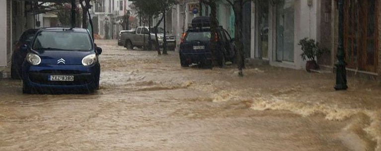
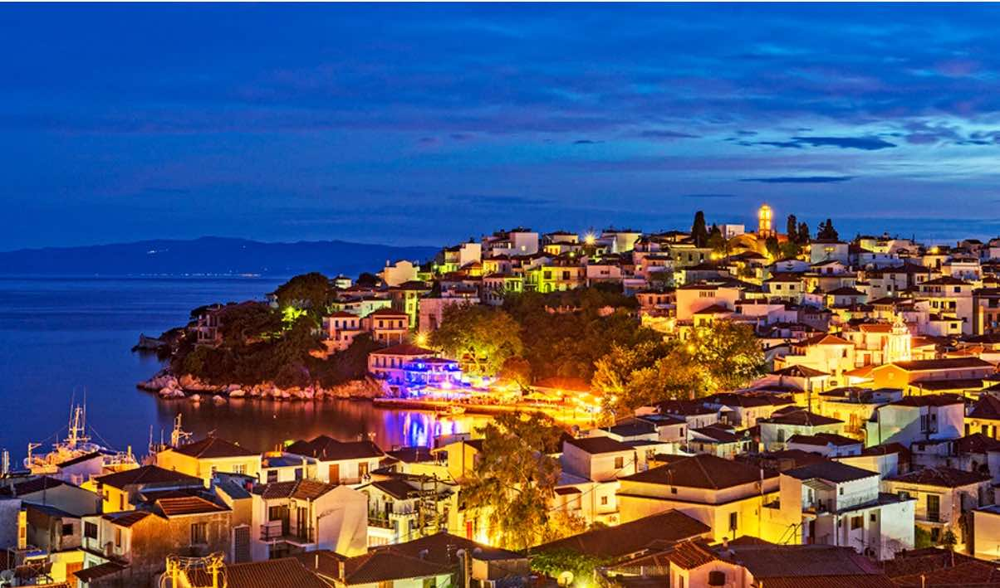

Κακοκαιρία στη Σκιάθο: ανακοίνωση του Αστυνομικού Τμήματος για τις μετακινήσεις

Το Αστυνομικό Τμήμα Σκιάθου εφιστά την προσοχή των οδηγών κατά την κυκλοφορία στον δρόμο Σκιάθου – Κουκουναριών, και συγκεκριμένα στις περιοχές Αχλαδιές, Βρωμόλιμνος, Κολιός και κυρίως Τρούλος. Να αποφεύγεται η μετακίνηση με συμβατικά Ι.Χ. οχήματα.
WTM 2025: Η Σκιάθος ανακηρύχθηκε «Καλύτερος Βιώσιμος Προορισμός» στα Greek Travel Awards

Πάνω από 70.000 Βρετανοί ταξιδιώτες ψήφισαν τη Σκιάθο στις Σποράδες ως τον Καλύτερο Βιώσιμο Προορισμό στα Greek Travel Awards, αναγνωρίζοντας τη δέσμευσή της στην υπεύθυνη τουριστική ανάπτυξη.
Τα βραβεία, που πραγματοποιούνται στο περιθώριο της World Travel Market (WTM) 2025 London, αποτελούν πρωτοβουλία του Ελληνικού Οργανισμού Τουρισμού (ΕΟΤ), σε συνεργασία με την Ice Lolly και το Travelsupermarket.com, δύο από τις κορυφαίες πλατφόρμες σύγκρισης τιμών και κρατήσεων για πακέτα διακοπών στο Ηνωμένο Βασίλειο.
Αποδεχόμενος το βραβείο εκ μέρους της Σκιάθου, ο Δήμαρχος Θοδωρής Τζούμας το αφιέρωσε στους επαγγελματίες του τουρισμού του νησιού.
«Αυτό το βραβείο ανήκει στους επιχειρηματίες του τουρισμού που μας κάνουν περήφανους με τη σκληρή δουλειά τους και τον σεβασμό που δείχνουν για το νησί μας»